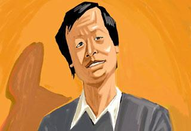

“那一年我二十一岁，在我一生的黄金时代，我有好多奢望。我想爱，想吃，还 想在一瞬间变成天上半明半暗的云。”
初识王小波，很多人是从《黄金时代》开始的。从此之后，王二成为了一个典型 的人物，出现在《革命时期的爱情》、《阴阳两界》等众多等小说中，而王小波 也成为了中国当代文学中近乎最重要的人物。
1997年4月11日，王小波因突发心脏病在家中猝赫然长逝，最近是王小波去 世的21周年纪念日，各种纪念活动层出不穷。和传统意义上的作家和学者不同， 王小波的形象要鲜活得多，他对于读者而言更像是一个生活中的朋友，而非高高 在上的作者。
从九十年代开始，“王小波热”一直还在持续着，曾经有句话广为流传，“男生不可 不读王小波，女生不可不读周国平”。曾经有很多文化名人都被看作是文化热潮， 比如周国平、余秋雨、韩寒等，但到了今天他们都已经走下神坛，光环不再，甚 至被人们视为“猥琐的中年直男”。
而唯有王小波依然被人们所欣赏，且拥有大量的年轻读者，他在人们心中好像从 来都没有老去。
他的大众形象的形成，一方面是由于其作品具有鲜明特点的叙事风格，另一方面 则是他与李银河的情感生活，尤其是那本《爱你就像爱生命》的情书集，甚至已 经成为了很多人心中对于理想爱情的想象。
从这个层面来看，王小波已经不仅仅是一个作家，而更像是个“精神符号”。你很 难用具体的词语来将之概括出来，它似乎是个暗号，只要你读过王小波的书，你 就能知道那是什么。

有人称王小波为“20世纪文坛的最美收获”。
言外之意就是在说王小波是一个“异类”。
其实王小波的个人经历是十分具有时代特征的，他出生于上世纪50年代，他出 生时正赶上他父亲被错划为“阶级异己分子”的时候。1968 年，16 岁的王小波赶 上了文化大革命，他到云南上山下乡，这段经历也在之后成了《黄金时代》的写作背景。
和其他同时代的作家一样，王小波的小说中也在描写那个特殊的时段，但是和《活 着》、《生死疲劳》等残酷厚重不同，王小波的视角显得有些特别。如果说传统 作家是现实主义，他们用个体的生命来书写宏大时代，那么王小波则是超现实主 义，他用荒诞和黑色幽默来书写个体的生命。
最典型的就是那部《黄金时代》，很多人最早是将它当作“黄书”看的，因为里面 有着大量的性爱描写。从表面看，这似乎很低俗，讲的是两个人“搞破鞋”的故事， 而实际书中的两个主角王二和陈清扬却是在用这种荒诞的方式去抵抗那个时代， 去保持个体的独立和自由。
正如王小波所言：“黄金时代并不是一部爱情小说，更不是一部色情文学，它想做的是关于“人”的生存状态的反思。” 而这个主题也贯穿了王小波的整个写作生涯，在小说中，他的主角大多是两个“奇 怪”的男女，在看完王二和陈清扬的故事之后，我们看到了无双的故事、红拂夜 奔的故事、绿毛水怪的故事。
每一个故事都不像在写现实，但里面的人却都是真实的个体，他们也许生活的年 代不同、所遭遇的事情不同，但他们所追寻的事情却是相同的，那就是个体的价值。
正如1996年王小波在接受意大利记者采访时所言：“我觉得人活着必 须要有尊严，没有个人的尊严，只有整体，这种生活是不合理的。”
而这种观念也体现在王小波的杂文中，在那篇广为流传的杂文《一只特立独行的 猪》里，王小波怀念了一只特别的猪，因为“除了这只猪，还没见过谁敢于如此 无视对生活的设置。相反，我倒见过很多想要设置别人生活的人，还有对被设置 的生活安之若素的人。因为这个缘故，我一直怀念这只特立独行的猪。”
在某种程度上，王小波是被看作是一个启蒙者的角色，在传统文化中，写作是“文 以载道”的，人们是活在某种沉重的束缚中的，即便是五四运动所强调的依旧是 救国，且被打上了浓厚的说教色彩。
或者更准确的说，王小波从来都不想将自己当成是所谓的“导师”，他所表现的是 个体如何生活的有趣和自由。这在整个中国文化领域的确是极其少见的，但是从 上世纪九十年代至今，对于个体价值的追寻正在逐渐成为一种刚需。人们越来越 无法接受被安排和设定的生活，他们希望在生活中获取乐趣。
从这个角度上看，王小波的思想的确是比较先锋的，即便是放在今天也是如此。 尤其是对于女性以及性少数群体上，王小波是完全反传统的。在中国作家的作品 中，尤其是男性作家，你很少能够看到如此独立和平等的关系。而且，他也是中 国较早接触到性少数群体且呼吁平权的人士。
这或许也是王小波为何在今日依旧被人们喜爱的原因，虽然这是个在物质和科技 如此发达的时代，但是人们在思想和观念上却要落后的多，很多人依旧活在某种 庸常的束缚当中，想要展现出自我、追求生活的乐趣，依旧会被旁人当做一只“特 立独行的猪”。
所以身处这个时代，王小波不仅没有过时，甚至已经成为了某种精神领袖。不过， 人们完全没有必要去神化王小波，他从来无意去成为所谓的“伟人”。
就像他在《沉默的大多数》中所言：“我对自己的要求很低：我活在世上， 无非想要明白些道理，遇见些有趣的事。倘能如我愿，我的一生就算成 功。”人们都想成为特立独行的人，而这或许才是关于特立独行的最好解读，无 需去努力成为谁，只不过是活成一个独立和自由的个体。